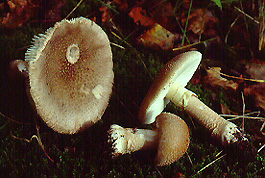

| name | Amanita rubescens var. rubescens |
| name status | nomen acceptum |
| author | Pers. : Fr. |
| english name | "Eurasian Blusher" |
| images |
 1. Amanita rubescens, with pine, Highlands and Islands Region, Scotland, UK.  2. Amanita rubescens, with beech, Netherlands. |
| cap | The cap of Amanita rubescens is 61 - 107 mm wide, brown with the appearance of having radially embedded fibrils, hemispheric at first, then convex to plano-convex to planar, tacky, satiny to shiny, with a nonstriate and nonappendiculate margin. The volva is present as pale brownish gray, small irregular warts, minutely warty, and easily removable. The flesh is 10 - 11.5 mm thick over the stem, thinning evenly towards the margin, white, sordid under the cap skin, pinkish on exposure. |
| gills | The gills are adnate to narrowly adnate, white, 5 - 15 mm broad, with a decurrent line on the stem. The short gills are subattenuate. |
| stem | The stem is 47 - 68 × 17 - 22 mm, white at first, soon bruising or staining pinkish, narrowing upward, flaring slightly at the top, with fibrils and recurved scales. The bulb is 16 - 30 × 26 mm and narrowly turnip-shaped. The ring is placed high on the stem, skirt-like, white at first, becoming cream, collapsing and tearing, with a thickened edge. The volva is present as occasional gray powder above the bulb and is often left entirely in the soil as grayish patches. The flesh is white, staining red brown, and solid. |
| odor/taste | The odor is sweetly fungoid. |
| spores |
The spores measure (7.0-) 8.0 - 10.6 (-12.5) × (5.2-) 5.5 - 7.0 (-8.0) µm and are ellipsoid to elongate (rarely broadly ellipsoid) and amyloid. Clamps are not observed at bases of basidia. [Note: RET's spore measurements are based on material from Austria, the Netherlands, Norway, Scotland, Switzerland as well as material introduced to Chile.] Neville and Poumarat (2004) provide the following spore measurements for this species: (7.0-) 7.5 - 10.0 (-11.0) × (5.0-) 5.5 - 7.0 (-8.0) µm. |
| discussion |
This species was originally described from northern Europe with oak (Quercus) and beech (Fagus). Neville and Poumarat (2004) mention the following associated trees: fir (Abies alba), pine (Pinus pinaster and P. silvestris), oak (Q. ilex, Q. pubescens, and Q. suber), and chestnut (Castanea sativa). To date, it has not been found in the Americas where there are a number of rubescent species. Although not as frequently as A. muscaria (L. : Fr.) Lam. var. muscaria and A. phalloides (Fr. : Fr.) Link, A. rubescens has been exported to other continents with European trees (for example, Chile in Monterrey Pine (Pinus radiata) plantations). For comparison to other rubescent taxa, see A. brunneolocularis Tulloss, Ovrebo & Halling; A. orsonii A. Kumar & T. N. Lakh.; A. novinupta Tulloss & J. Lindgr., A. rubescens var. alba Coker; and A. congolensis (Beeli) Tulloss et al.. For distinguishing between rubescent taxa in section Validae, refer to the Key of rubescent taxa in Amanita sect. Validae.—R. E. Tulloss and L. Possiel "Amanita rubescens f. annulosulfurea (Gillet) Lange"  The name Amanita rubescens f. annulosulfurea is applied to those specimens of Amanita rubescens which differ only in having a sulfur-yellow ring on the stem. Dr. C. Bas (Leiden, the Netherlands) and I have discussed this species. Dr. Bas informs me that he has searched diligently for other macroscopic or microscopic character correlated with a colored annulus and that he found none. This being the case, the name appears to lack taxonomic value and is not included in the list of taxa for this site.—R. E. Tulloss |
| brief editors | RET |
| name | Amanita rubescens var. rubescens | ||||||||
| author | Pers. : Fr. 1797. Tentam. Disp. Method. Fung.: 67. | ||||||||
| name status | nomen acceptum | ||||||||
| english name | "Eurasian Blusher" | ||||||||
| synonyms |
≡Agaricus rubescens Pers. : Fr. 1821. Syst. Mycol.: 18.
≡Amplariella rubescens (Pers. : Fr.) E.-J. Gilbert. 1940. Iconogr. Mycol. (Milan) 27, suppl. (1): 78, tab. 41 (figs. 5-6), tab. 42 (figs. 1-2).
≡Agaricus pustulatus Schaeff. 1774. Fung. Bavar. Palatin. Ratisbon. Nascunt. Icones 4: 39. [Ref. pl. 91 in vol. 1 (1762).]
For a much more extensive synonymy see Amanita Nomencalture (t.b.d.). The editors of this site owe a great debt to Dr. Cornelis Bas whose famous cigar box files of Amanita nomenclatural information gathered over three or more decades were made available to RET for computerization and make up the lion's share of the nomenclatural information presented on this site. | ||||||||
| MycoBank nos. | 172799, 490384, 495392, 480031, 493006, 284158, 486444, 166075, 462642, 276888, 461721, 495398, 143399, 292460, 503903, 116587, 372290 | ||||||||
| GenBank nos. |
Due to delays in data processing at GenBank, some accession numbers may lead to unreleased (pending) pages.
These pages will eventually be made live, so try again later.
| ||||||||
| lectotypes | Amanita rubescens—Schaeffer. 1762. Fung. Bavar. Palatin. Ratisbon. Nascunt. Icones 1: pl. 91. | ||||||||
| lectotypifications | Amanita rubescens—Neville and Poumarat. 2004. Fungi Europeai 9: 758-759. | ||||||||
| intro |
Olive text indicates a specimen that has not been
thoroughly examined (for example, for microscopic details) and marks other places in the text
where data is missing or uncertain. The following is based upon original research by R. E. Tulloss. | ||||||||
| pileus | 61 - 107 mm wide, brown, bruising reaction not rapid, virgate, hemispheric at first, then convex to planoconvex to planar, tacky, satiny to shiny; context white, sordid just below pileipellis, becoming pinkish slowly on exposure, 10 - 11.5 mm thick; margin nonstriate, nonappendiculate; universal veil as warts, pale brownish gray, small, irregular, verruculose (10× lens), detersile. | ||||||||
| lamellae | narrowly adnate to adnate, with decurrent line on stipe apex, ?, white in mass and in side view, bruising/staining red-brown; lamellulae subattenuate (with uncurving slope). | ||||||||
| stipe | 47 - 68 × 17 - 22 mm, white at first, soon bruising/staining pinkish brown to red-brown, narrowing upward, flaring slightly at apex, with surface fibrillose, with surface occasionally cracking to form recurved scales; bulb 16 - 30 × ? - 26 mm, narrowly napiform; context white, bruising/staining red-brown, solid, red-brown in larva tunnels; partial veil superior, membranous, skirt-like, white at first, becoming cream, thick-edged, collapsing on stipe and tearing; universal veil occasionally with gray pulverulence above bulb (remains of limbus internus), often entirely left in soil as grayish patches. | ||||||||
| odor/taste | Odor sweetly fungoid. Taste not recorded. | ||||||||
| macrochemical tests |
Spot test for laccase (syringaldazine) - positive only on exterior of bottom of bulb in both young and mature specimens. Spot test for tyrosinase (paracresol) - in young specimen, positive in pileipellis and weakly positive in spots on lamellae and in bulb and negative throughout remainder of basidiome; in mature specimen, positive in pileipellis and adjacent pileus context and weakly positive elsewhere in basidiome except for faces of lamellae and context of base of bulb. Test voucher: Tulloss 9-19-87-D. | ||||||||
| pileipellis | partially to nearly totally gelatinized at surface, hyaline and colorless there and becoming progressively darker (yellow-orange to orange to brownish orange in 3% KOH) toward pileus context, 400 - 475 µm thick; filamentous, undifferentiated hyphae 2.2 - 18.0 µm wide, branching, interwoven, subradially arranged, sometimes in fascicles, occasionally with yellowish subrefractive walls; vascular hyphae not observed. | ||||||||
| pileus context | filamentous, undifferentiated hyphae 2.0 - 10.8 µm wide, branching, plentiful, forming loosely interweaving fascicles and single strands, occasionally with subrefractive walls; acrophysalides plentiful, thin-walled, narrowly clavate to clavate to ellipsoid to elongate to subglobose (up to 97 × 47 µm or larger); vascular hyphae not observed. | ||||||||
| lamella trama | wcs = 45 - 75 µm (good to very good rehydration); bilateral, with shallow angle of divergence, with most cells of subhymenial base having major axis at shallow angle to central stratum, with larger cells of subhymenial base up to 55 × 15.8 µm (many narrowly ellipsoid to fusiform to allantoid); filamentous, undifferentiated hyphae 2.0 - 7.2 µm wide, branching; terminal, inflated cells sparsely distributed or absent [only two seen and these possibly separated from subsequent cell(s) by sectioning], clavate, thin-walled, up to 30 × 12.2 µm, projecting up to 10.0 µm from central stratum; vascular hyphae not observed. | ||||||||
| subhymenium | wst-near = 40 - 70+ µm (95 - 105 µm in very best rehydration of very broad lamellae); wst-far = 50 - 85+ µm (115 - 120 µm with very best rehydration of very broad lamellae); pseudoparenchymatous (cellular), 3 to 5 inflated cells deep (from base of longer basidia/-oles to uninflated elements of subhymenial base), with elements giving rise to basidia often having major axis perpendicular to the central stratum, with one-half to two and one-half cells in chain between base of longest basidium/-ole of given region and shortest nearby basiole, with basidia arising from inflated cells and short partially inflated hyphal segments. | ||||||||
| basidia | 27 - 46 × 8.0 - 12.0 µm, 4-sterigmate, with sterigmata up to 8.5 × 2.8 µm, thin-walled; clamps not observed. | ||||||||
| universal veil | On pileus: color deriving largely from orange-brown collapsed and gelatinized elements; filamentous, undifferentiated hyphae 1.8 - 13.5 µm wide, branching, plentiful, thin-walled, occasionally with yellowish walls, occasionally with clavate to subfusiform intercalary cells (up to 15.2 µm wide); inflated cells dominant, terminal, commonly in chains of two or three (sometimes more), occasionally singly, ellipsoid to ovoid to elongate to clavate, occasionally subglobose to pyriform or clavate-submucronate, up to 135 × 94 µm, thin-walled, usually hyaline and colorless, occasionally sordid; vascular hyphae 1.8 - 14.0 µm wide, relatively frequent to plentiful. On stipe base: not present in specimens examined. | ||||||||
| stipe context | longitudinally acrophysalidic; filamentous, undifferentiated hyphae 2.2 - 7.8 µm wide, branching, plentiful, with walls thin or (often) slightly thickened, sometimes with guttular deposit on inside of wall; acrophysalides plentiful to dominant, slender, up to 373 × 30 µm, with walls slightly thickened (0.5±A± µm thick); vascular hyphae not observed. | ||||||||
| partial veil | filamentous, undifferentiated hyphae 2.5 - 7.8 µm wide, frequently branching, interwoven, many with radial orientation at least in part, with branches often loosely coiled or loosely tangled, sometimes with long slightly inflated intercalary segments (up to 14.0 µm wide), sometimes with slightly inflated subrostrate terminal cells, with walls thin or slightly thickened, infrequently with subrefractive walls, apparently with no strong tendency for radially oriented elements to form fascicles; inflated cells clavate to subfusiform to narrowly fusiform-rostrate, up to 117 × 20 µm, with walls thin or up to 0.5 µm thick, terminal, singly, mostly scattered, occasionally in clusters and then clavate to subcylindric (up to 60 × 19.2 µm) to broadly ellipsoid (e.g., 32 × 24 µm); vascular hyphae 4.2 - 7.6 µm wide, sinuous, scattered; clamps not observed. | ||||||||
| lamella edge tissue | not described. | ||||||||
| basidiospores | composite from material revised by RET: [310/13/8] (7.0-) 8.0 - 10.6 (-12.5) × (5.2-) 5.5 - 7.0 (-8.0) µm, (L = (8.4-) 8.6 - 10.1 µm; L’ = 9.2 µm; W = 6.0 - 6.6 (-6.7) µm; W’ = 6.3 µm; Q = (1.20-) 1.31 - 1.67 (-1.87); Q = 1.37 - 1.56 (-1.58); Q’ = 1.48), hyaline, colorless, thin-walled, smooth, amyloid, broadly ellipsoid to ellipsoid to elongate, adaxially flattened, sometimes expanded at one end; apiculus sublateral, cylindric, proportionately small; contents guttulate to granular; white in deposit. | ||||||||
| ecology |
Subgregarious to gregarious. Chile: In Pinus radiata plantation. Netherlands: Under Fagus silvatica in dark, sandy loam beside canal. Norway: In Picea abies forest with ferns on somewhat moist, nutrient rich soil. Switzerland: At 500 - 550 m elev. Under Picea abies or in forest of Picea, Abies, and Fagus or in Picea nursery. Scotland, U.K.: In sand in plantation of Pinus sylvestris L. or under Fagus sylvatica in sandy loam with leaf litter. Amanita rubescens has been introduced in the Southern Hemisphere in association with exotic plants. The species is reported from Argentina (Raithelhuber, 1986), Australia (a single occurrence) with "chestnut" (Reid, 1980), Chile with P. radiata and Quercus robur (Garrido, 1986; Valenzuela et al., 1992; Valenzuela et al., 1999), and South Africa in Pinus plantations and with Quercus (Pearson, 1950; Reid and Eicker, 1991). Ridley (1991) provides evidence that a report of occurrence in New Zealand is in error. Reports from central Africa may refer to a distinct taxon (Beeli, 1935; Buyck, 1994; Pegler & Shah-Smith, 1997). This species is apparently less frequently exported from Europe than either A. muscaria or A. phalloides. Tulloss et al. (1992) and Tulloss and Lindgren (1994) have demonstrated that many reports of the present species from Andean Colombia, Costa Rica, and the United States have been based on misdeterminations of at least three different indigenous, rubescent taxa. In cases of material from naturally occurring Pinus or Quercus forest in the Western Hemisphere or material found associated with trees having their natural range in the Americas, when identification as A. rubescens is possible, determination as a Western Hemisphere species (e.g., A. brunneolocularis Tulloss et al. or A. novinupta Tulloss & J. Lindgr.) should be considered. The latter species has been introduced to the Canary Islands, apparently with P. radiata (Tulloss, unpub. data). | ||||||||
| material examined |
AUSTRIA: TIROL—ca.
Kramsach, Angerberg, 28.vii.1978 M. Moser 78/114
(IB).
NETHERLANDS: ZUID
HOLLAND—Wassenaar, 29.ix.1987 C. Bas &
R. E. Tulloss [Tulloss 9-19-87-D] (RET 020-1).
NORWAY:
AKERSHUS—Ås, church estate forest
[UTM: NM 990 190], 24.vii.1977 Knut H. Østmoe 69/77
(O).
SWITZERLAND:
LUZERN—Adligenswil, Meggerwald
["quad 2167"], 22.vii.1989 F. Kränzlin 2207-89 K 1
(NMLU). ZÜRICH—Zürich, 5.x.1991
C. Lavorato 911005-16 (in herb. C. Lavorato;
RET 036-8), 7.vii.1992 C. Lavorato 920707-21
(in herb. C. Lavorato; RET 078-7).
TURKEY:
Trabzon, Macka,
6.vii.1991 Erteĝrul Sesli 115 (RET 123-4),
117 (RET 122-10); Trabzon area, vi-vii.1991 E.
Sesli 98 (RET 122-9). {Note: One of sequences
(not listed here) collected by Sesli on 6.viii.1991
has proven to be a North American species from a
Pinus plantation. Therefore we are
hesitant about the determination of the other
Turkish material until all the collections can be
sequenced.—ed.]
U.K.: SCOTLAND—Grampian Reg. - Dyke and Moy, Darnaway Estate, 6.ix.1988 Anna Gerenday & Aaron Norarevian s.n. [Tulloss 9-6-88-F] (RET 107-1); Dyke and Moy, Culbin Sands, Culbin For., 6.ix.1988 Mary A. King, Geoffrey Kibby, Rhoda Roper, & R. E. Tulloss [Tulloss 9-6-88-B] (RET 107-2). Material that is not Eurasian CHILE: LOS LAGOS—Valdivia, 22.iv.1982 Norberto Garrido Guzmán G.406 (BAFC 28772). [SOUTH AFRICA: ??.] | ||||||||
| discussion |
RET and Dr. C. Bas (pers. commun.) agree with the information and reasoning backing the choice of a lectotype for this species by Neville and Poumarat (2004). At the time of this writing, four rubescent taxa of section Validae have been described as distinct from A. rubescens. In their protologs, A. novinupta (Tulloss & Lindgren, 1994) and A. brunneolocularis Tulloss, Ovrebo & Halling (1992) were compared to the present taxon and their taxonomic separation justified. Amanita rubescens var. alba Coker (1917) is not a variety of the present species and is more similar phenetically to A. rubescens sensu auct. U.S.A. orient. RET expects to publish a new name for the latter and a new combination or a new name for the former. As in the case of A. novinupta, A. orsonii A. Kumar & Lakh. in A. Kumar et al. (1990) has criss-crossing hyphae in the pileipellis without a dominant orientation—unlike the hyphae of the pileipellis of the European species. In addition, the spores of A. orsonii are shorter than those of A. rubescens on average and, consequently, exhibit higher Q values. The character states demonstrating the difference between the present species and A. rubescens var. alba include the following: (t.b.d.). No rubescent North or Central American material that RET has examined to date is assignable to A. rubescens. There may be as many as seven indigenous taxa that have been called A. rubescens in the Americas north of the southern limit of Quercus in Colombia (Tulloss, unpub. data). As noted above, the species has reportedly been introduced to Argentina?? and Chile. Østmoe 69/77 consists of a single immature basidiome. Moser 78/114 is illustrated by Moser and Jülich (1989) in a color photograph. Kränzlin 2207-89 K 1 is illustrated in a color photograph by Breitenbach and Kränzlin (1995). This organism has previously be called "Amanita sp-rubescens01" on this site. | ||||||||
| citations | —R. E. Tulloss | ||||||||
| editors | RET | ||||||||
Information to support the viewer in reading the content of "technical" tabs can be found here.
| name | Amanita rubescens var. rubescens |
| bottom links |
[ Section Validae page. ]
[ Amanita Studies home. ]
[ Keys & Checklists ] |
| name | Amanita rubescens var. rubescens |
| bottom links |
[ Section Validae page. ]
[ Amanita Studies home. ]
[ Keys & Checklists ] |
Each spore data set is intended to comprise a set of measurements from a single specimen made by a single observer; and explanations prepared for this site talk about specimen-observer pairs associated with each data set. Combining more data into a single data set is non-optimal because it obscures observer differences (which may be valuable for instructional purposes, for example) and may obscure instances in which a single collection inadvertently contains a mixture of taxa.


Text and User-Generated Sporographs are published under the Creative Commons License.

In the case of a taxon page, image credits are on the 'image' tab.